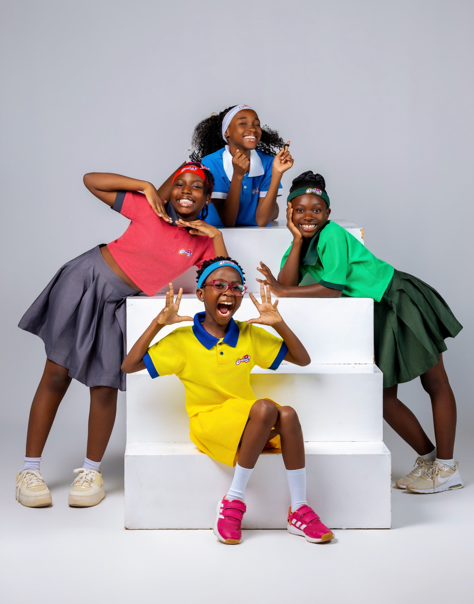

Every now and then, an idea arrives in the most unexpected way.
For me, Besties began with a phone call.
I was speaking with Ola, the mother of Kelly, one of the girls who would eventually become one of the original Besties. During our conversation, I heard her listening to a voice note and asked, "Who are those speaking?"
She told me it was Kelly and her friends having a conversation in a WhatsApp group chat.
I listened, and something immediately clicked. These 9 year old girls were funny, expressive, curious and completely themselves. I remember thinking, there is a show here.
That simple conversation became Best Girlfriends, a podcast featuring four girls and created to give young girls a space to talk, share, learn and be heard.
But somewhere along the way, we realised we were building something bigger than a podcast.
The show grew into a community. We took the Best Girlfriends experience from YouTube to traditional television, celebrated the end of our first season with a live party, and continued to watch more girls connect with the world of Besties. As we prepared for Season 2, it became increasingly clear that the girls didn't just want to watch Besties. They wanted to be part of it.
And that is how Besties was born.
Besties is our growing community for girls, currently creating experiences for girls aged 8–12, with plans to grow alongside them and welcome even more girls into the community. Through camps, events, content, mentorship and carefully curated experiences, we want to give girls things they may not always learn in a classroom or even at home: confidence, communication, creativity, independence, collaboration, self-expression and the courage to navigate the world around them.
Our first Besties Summer Camp was our first big step in bringing that vision to life.
For 60 hours, 12 girls lived, learned, created, competed, laughed and made memories together. And as I watched them experience the camp, I was reminded of why we started this journey in the first place.
We are not simply creating content for girls. We are creating a world they can grow with.
A world filled with friendship, learning, creativity, adventure and experiences that stay with them long after the cameras stop rolling.
Behind Besties is also a carefully selected team of women who share that vision. Producers, teachers, creatives, chaperones, mentors and women who are building meaningful things of their own. Because if we are asking these girls to dream, to lead and to become confident young women, we also want them surrounded by women who embody those possibilities.
We are only getting started.
The Besties community will continue to grow, evolve and create new experiences for girls at different stages of their journey.
And perhaps one day, we will look back at that little WhatsApp voice note and realise that four girls simply having a conversation started something far bigger than any of us imagined.
Welcome to Besties. 💕
Aggor Yorm
Founder, Egli Studios
From camps to community events, there are plenty of ways to grow with Besties. Reach out and let's talk.